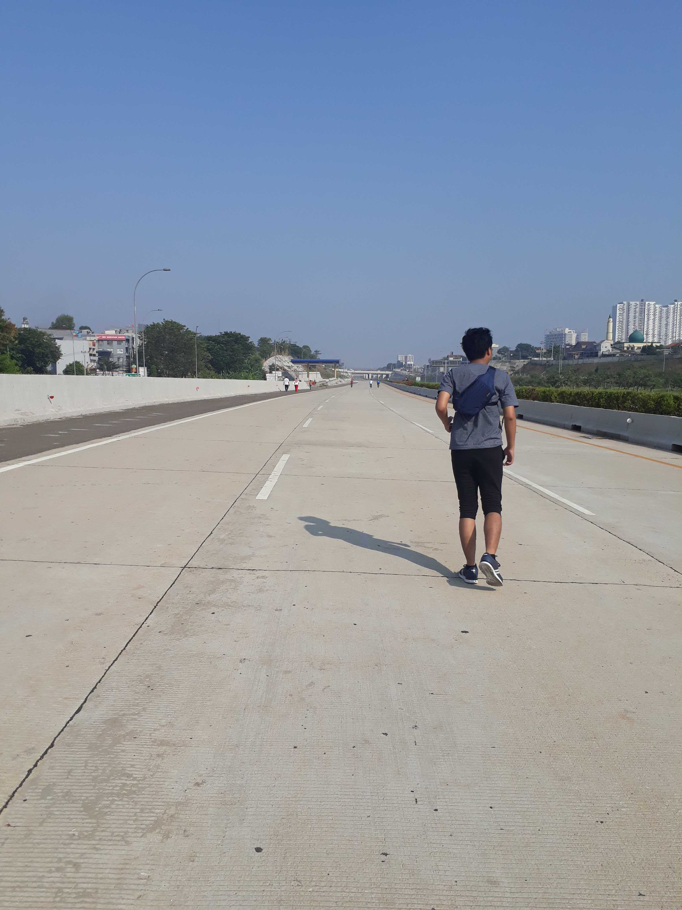
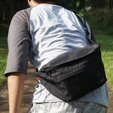

Jalan Tol Cijago (kependekan dari jalan tol Cinere-Jagorawi) adalah jalan tol baru dekat tahun-tahun ini merupakan tol baru di kota depok. tol Cijago ini akan berujung sampai ke Cinere & kendaraan mobil yang hendak ke jakarta bisa melintasi ke jalan tol Jagorawi tanpa melewati Lenteng Agung dan Pasar Minggu.
selama proses pembangunan jalan hingga sampai jadi, namun tol cijago masih belum dioperasionalkan, dengan begitu tol tersebut bisa digunakan masyrakat sekitar salah satunya untuk berolahraga. termasuk saya sendiri memanaatkan moment tersebut untuk olahraga lari di tol cijago yang dekat dengan jalan djuanda. apa lagi olahrga di tol cijago masih sepi, tidak seramai CFD dijakarta yakni seperti HI. untuk bisa menikmati olahrga lari pagi yang sehat & menyenangkan, pastinya bawa peralatan yang menunjang seperti :
tas kecil bisa digunakan untuk membawa barang barang kecil seperti dompet, Handphone, kunci motor, dll.
selain peralatan yang dibawah, akan sangat menyenangkan jika terapat partnet olahraga, bisa dengan teman, keluarga atau pasangan. sehingga ketika berolahraga bisa saling support berolahraga, mengobrol santai, bahkan bisa mengabadikan berolahraga dengan berfoto. hasil dari foto-foto CFD di tol cijago bisa dilihat instagram @arnov.17